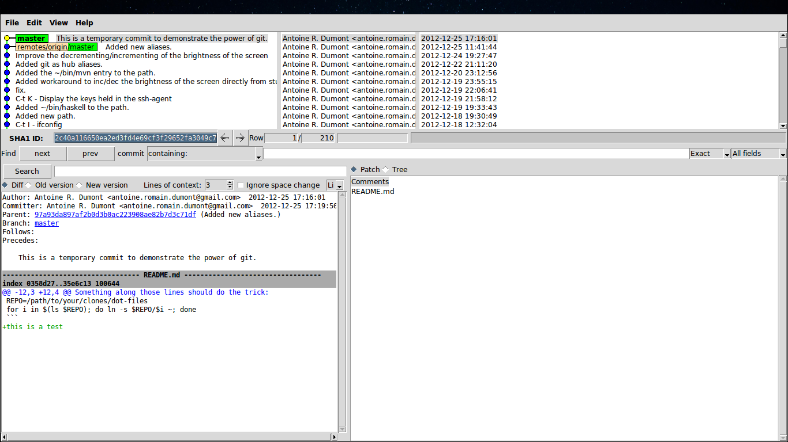

In this post, I will present my git aliases and my system git aliases.
There exists two kinds of aliases, the:
I will first gives you the main script to deploy them if you are interested.
Then, I will describe the aliases.
In the title, you will find the system alias first, then the git one, the overall separated by the /.
My ~/.bashrc orchestrates the sourcing of my aliases:
~/.bashrc
... [ -f ~/.bash_aliases ] && . ~/.bash_aliases ...
Then my aliases are loaded:
alias git='hub' alias gitka='gitk --all' alias gst='git status' alias gci='git commit -v' alias gco='git checkout' alias gbr='git branch' alias gdf='git diff' alias gl='git log --oneline --graph --remotes --decorate --all' alias gf='git fetch' alias gfa='git fetch --all'
To run once:
#!/bin/bash -e git config --global user.name "$YOUR_NAME" git config --global user.email "$YOUR_EMAIL" # emacs git config --global core.editor "$YOUR_EDITOR" # color everywhere (one flag) git config --global color.ui true # or in separate #git config --global color.branch auto #git config --global color.diff auto #git config --global color.interactive auto #git config --global color.status auto # tool to help the merging git config --global merge.tool meld # aliases git config --global alias.co checkout git config --global alias.br branch git config --global alias.ci commit git config --global alias.st status # unstage a file git config --global alias.unstage 'reset HEAD~ --' # see the last log git config --global alias.last 'log -1 HEAD'
Notes
$YOUR_NAME with your name
$YOUR_EMAIL with your email
$YOUR_EDITOR with your editor
sudo aptitude install -y meld
hub
I recently came across hub that is a command to help in gitting with github. This adds the functionalities to fork, pull request, browse issues, etc…
This seems to be a powerful interface that permits to play with github via the CLI. I do not yet play enough with it so I do not enter into much details here.
Suffice it to say that you can alias it as git. You will still be able to use hub very much like git.
gitk --all
I use gitk to see where I'm at in terms of branch and SHA1. I often want to see all the branches too.

If not, i use directly gitk
Note There is a CLI interface to see beautiful branches called tig.
Possible output:
2012-12-25 11:55 o Unstaged changes 2012-11-22 19:58 Antoine R. Dumont o [master] [origin/master] Remove useless import. 2012-11-22 19:53 Antoine R. Dumont o Play with the trello api. 2012-11-12 12:35 Antoine R. Dumont M─┐ [upstream/master] Merged in denlab/cljsta (pull request #41) 2012-11-02 18:27 Antoine R. Dumont M─┐ Merged in denlab/cljsta/movie-query (pull request #40) 2012-11-02 15:46 Denis Labaye │ │ o EC2: some refactoring (->) 2012-11-02 12:27 Denis Labaye │ │ o DONE EC2: List all instances of all regions 2012-11-01 19:58 Denis Labaye │ o │ imdbapi: a ns to query movies 2012-11-01 17:28 Denis Labaye │ │ o DONE implements the fake ls (with the local data on disk) 2012-11-01 17:12 Denis Labaye │ │ o DONE regions 2012-11-01 14:56 Denis Labaye │ │ o cleanup 2012-10-31 19:14 Antoine R. Dumont I─┐ │ Merged in denlab/cljsta (pull request #39) 2012-10-31 09:53 Denis Labaye │ o─┘ DONE put body in <> properly 2012-10-31 09:34 Denis Labaye │ o DONE handle the throw exception case 2012-10-31 09:20 Denis Labaye │ o DONE put body in <> 2012-10-30 20:15 Antoine R. Dumont I─┐ Merged in denlab/cljsta (pull request #38) 2012-10-30 15:46 Denis Labaye │ o DONE package compression 2012-10-30 15:07 Denis Labaye │ o DONE make times in title optional 2012-10-30 11:45 Denis Labaye │ o DONE add options capabilities to the org-rendering 2012-10-30 11:22 Denis Labaye │ o DONE remove the brackets in [%] 2012-10-30 11:17 Denis Labaye │ o doc: cleanup todo 2012-10-30 12:06 Antoine R. Dumont I─┐ Merged in denlab/cljsta (pull request #37) 2012-10-30 10:10 lazyposse M─┐ Merged in ardumont/cljsta/treemap (pull request #36) 2012-10-30 10:06 Denis Labaye │ │ o DONE Acquiring WCI data 2012-10-29 21:48 Antoine R. Dumont │ o │ [origin/treemap] Just a little update on the actual status. 2012-10-29 21:34 Antoine R. Dumont │ o │ *** DONE generate the pivot for the jtreemap applet 2012-10-29 20:37 Antoine R. Dumont │ o │ *** DONE tryout one sample 2012-10-29 19:57 Antoine R. Dumont │ o │ *** DONE add the jtreemap dependency 2012-10-29 19:56 Antoine R. Dumont │ o │ *** DONE Rename the previous treemap namespace (that was not a real treemap) into a more appropriate namespace. 2012-10-29 16:46 Antoine R. Dumont I─┐ │ Merged in denlab/cljsta (pull request #35) 2012-10-29 01:48 Denis Labaye │ o─┘ data: added files from WCI captures
git status
Show the current working tree status in the current branch.
git commit
Record changes to the current branch.
git checkout
Move to branch, create new branch.
git branch
List, creates or delete branches.
git diff
To see the diff between the workspace and the git repository.
git fetch
To sync my fork with the remotes forks I depend upon.
git fetch --all
I always work with forks. So when I work in team project, I have at least 2 remotes:
When I want to retrieve the remote commits, I systematically want those of my fork and then those from the main fork to sync the forks. It's all a story about forks! :D
git reset HEAD~ --
I came across it and thought this was a good idea so i installed it.
But I systematically forgot about it and so I still use directly git reset.
git log -1 HEAD
To see the last commit. This is mostly to check if I am where I think I am
Git is a powerful tool. I love it but sometimes the commands are a little long to type. If you use aliases, you reduce this amount of typing.
Just alias it!